Product Design & Visual Systems
For this project brief, we had to choose any digital product or platform and redesign it using another design system, where the more contrasting the design system, the better, to reveal how system logic reshapes product experience.
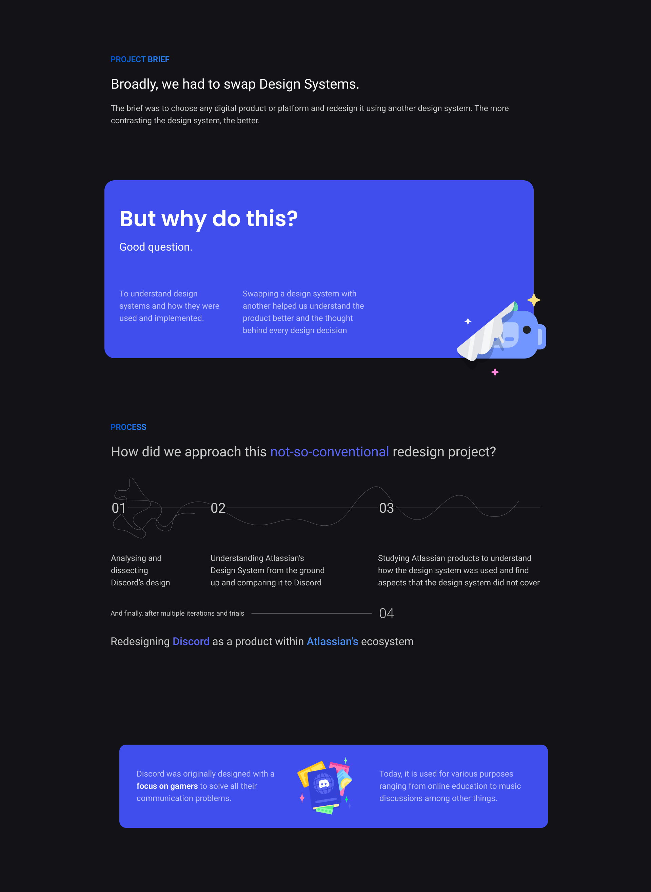
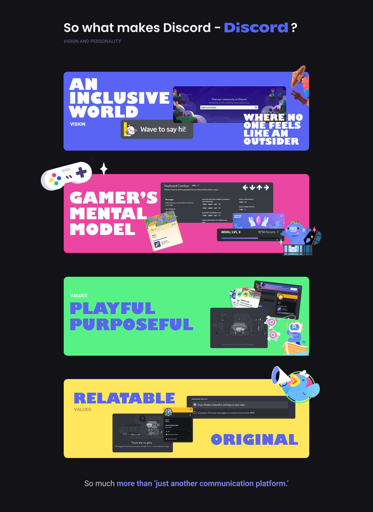
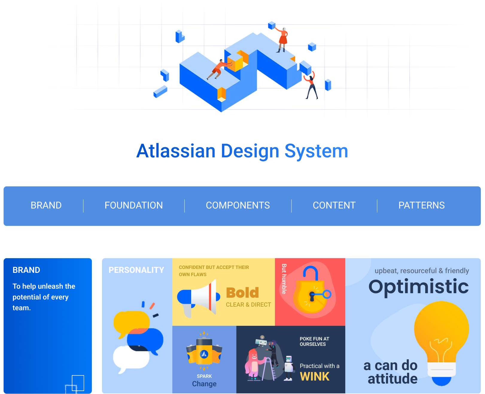
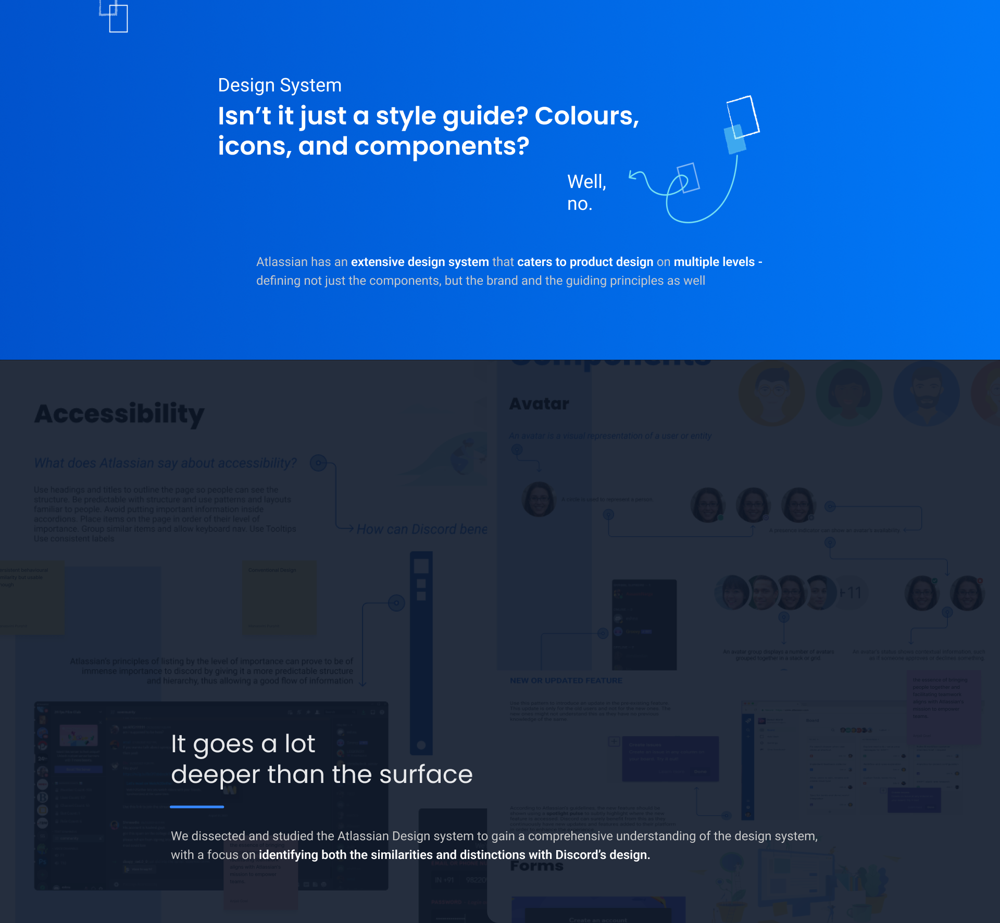
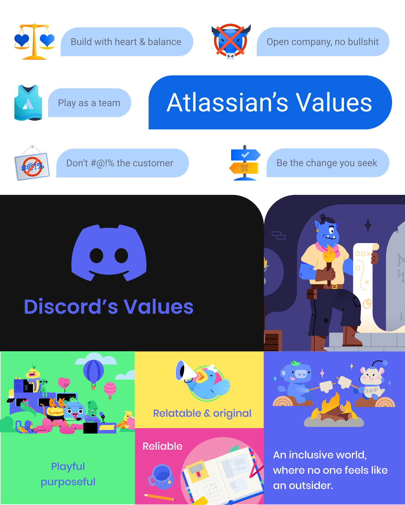
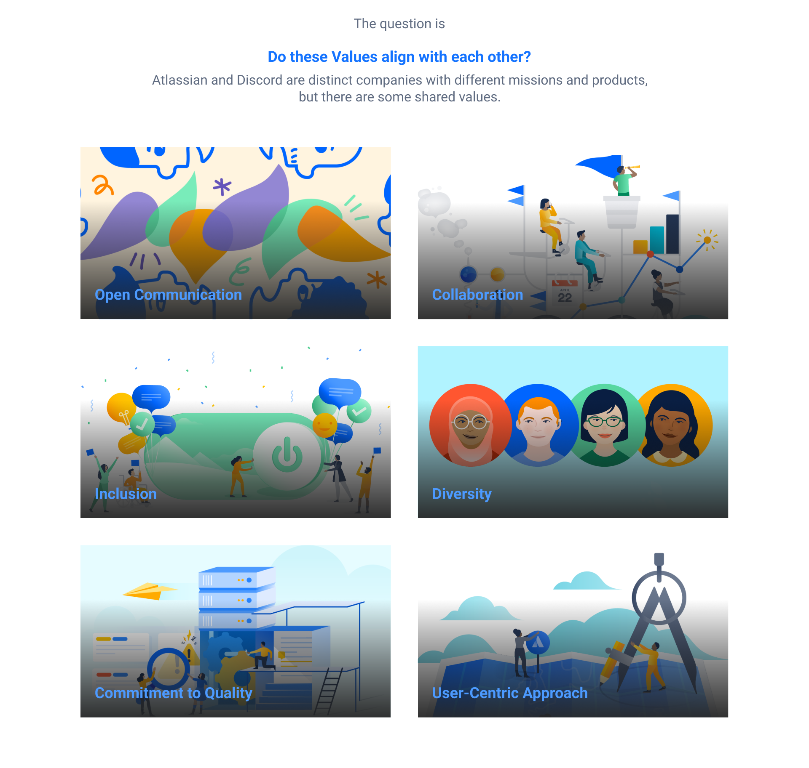
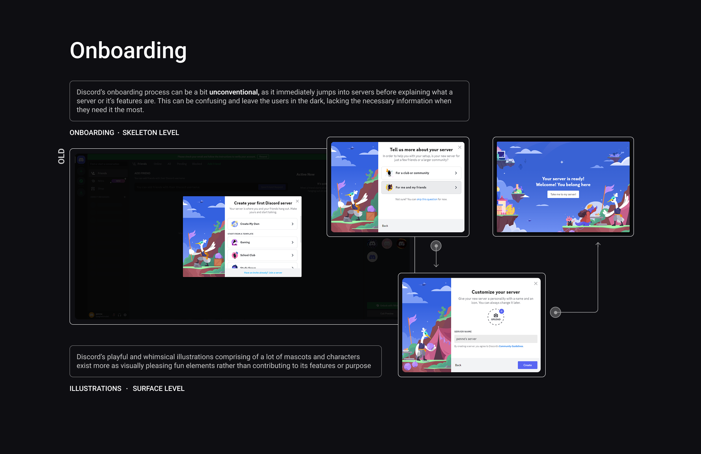
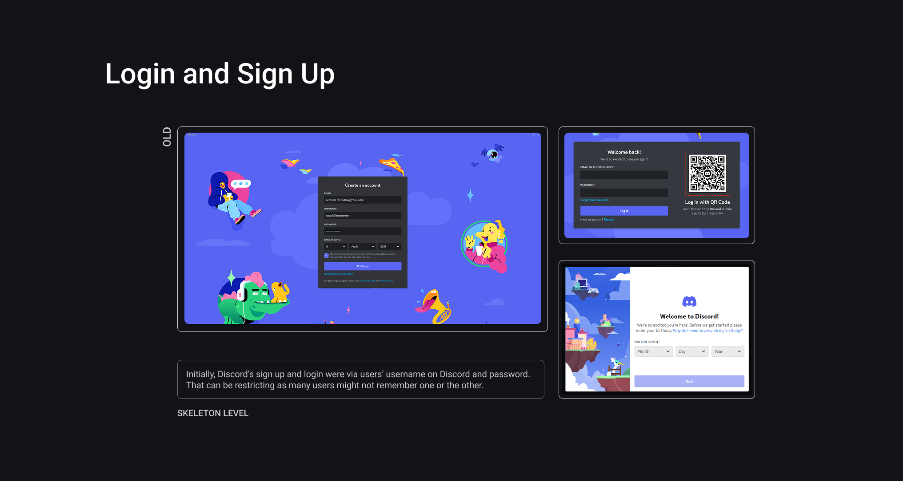
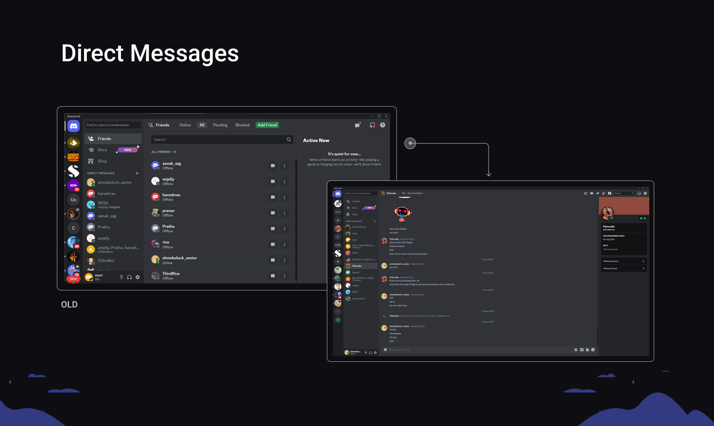
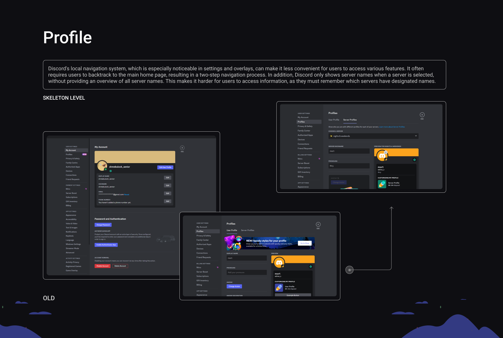
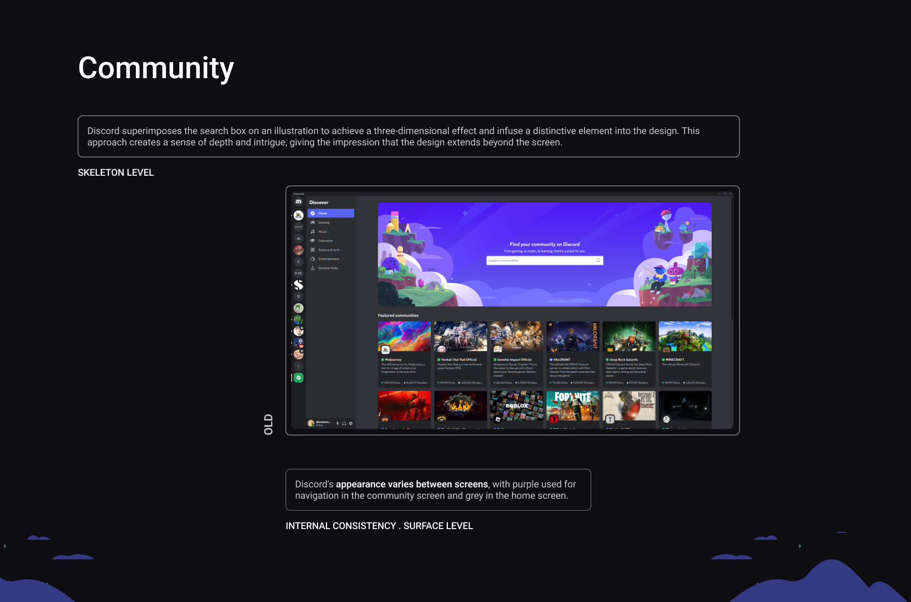
Back to